Plataforma de intercambio de libros y material académico entre estudiantes universitarios
Proyecto demo final — Entrega oficial de la herramienta (Semana 8)
Noviembre de 2026
Contenido
¿Qué es SWAPU?
Explorar el catálogo sin cuenta
Crear una cuenta y confirmar el correo
Iniciar y cerrar sesión
Tu perfil y la verificación de estudiante
Publicar un libro
Verificar tu libro con fotografías
Buscar libros en el catálogo
Coincidencias (matches)
Gestionar tus trueques
Chat del intercambio
Calificar un intercambio y reputación
Tickets de soporte
Panel de administración y moderación
Preguntas frecuentes y solución de problemas
Sobre las imágenes: todas las capturas de este manual se tomaron de la aplicación real en funcionamiento,
con datos de ejemplo creados para la demostración (estudiantes ficticios de la Universidad de San Buenaventura Medellín).
1. ¿Qué es SWAPU?
SWAPU es una aplicación web que permite a estudiantes universitarios intercambiar libros y material académico sin dinero.
Publicas los libros que ya no usas, indicas cuál necesitas y la plataforma te conecta con compañeros que tienen lo que buscas.
Lo que puedes hacer
Publicar libros con su información bibliográfica y verificarlos con fotografías.
Buscar libros por título, autor o categoría.
Recibir coincidencias automáticas de intercambio.
Proponer, aceptar, rechazar y completar trueques.
Coordinar la entrega por chat en tiempo real.
Calificar a la otra persona y construir tu reputación.
Menú principal
Opción
Para qué sirve
Catálogo
Ver y buscar todos los libros disponibles.
Matches
Coincidencias entre tus libros y los de otros estudiantes.
Trueques
Estado de tus propuestas e intercambios.
Chat
Conversaciones de tus trueques activos.
Mi Perfil
Tus datos, publicaciones, reputación y reseñas.
Tickets
Mensajes de soporte y revisión de tus publicaciones.
+ Publicar
Registrar un libro nuevo.
2. Explorar el catálogo sin cuenta
Al abrir SWAPU verás la página de inicio y el catálogo de libros verificados. No necesitas una cuenta para explorarlo.
Figura 1. Página de inicio y catálogo público.
Usa la barra de búsqueda para buscar por título, autor o el libro que la persona quiere a cambio.
Filtra por categoría con los botones (Ingeniería y Tecnología, Ciencias Básicas, Humanidades…).
Cada tarjeta muestra el estado físico del libro y su categoría.
Para publicar, proponer trueques o chatear debes registrarte e iniciar sesión.
3. Crear una cuenta y confirmar el correo
Pulsa Registrarse en la esquina superior derecha.
Escribe tu nombre completo, tu correo y una contraseña de mínimo 8 caracteres.
Completa, si quieres, tu información académica: universidad, facultad, carrera, semestre y teléfono.
Pulsa Crear cuenta.
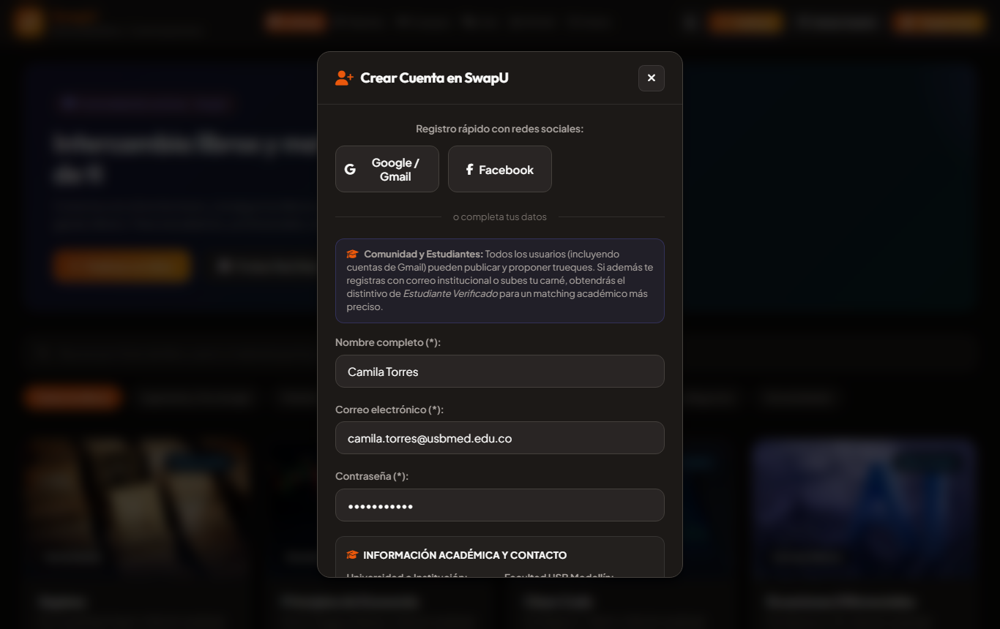
Figura 2. Formulario de registro.
Confirmar tu correo institucional
Si te registras con un correo institucional (por ejemplo @usbmed.edu.co), recibirás un código de 6 dígitos.
La aplicación te lo pedirá en una ventana: escríbelo y acepta. Tu cuenta quedará activa y con la insignia de Estudiante Verificado.
El código vence a los 30 minutos y admite 5 intentos.
Si no lo recibiste, deja la ventana vacía y acepta reenviar el código.
Hasta confirmarlo no podrás publicar ni intercambiar con esa cuenta.
También puedes registrarte con Google o Facebook si la institución habilitó esos accesos.
4. Iniciar y cerrar sesión
Pulsa Iniciar Sesión.
Escribe tu correo y contraseña y pulsa Entrar.
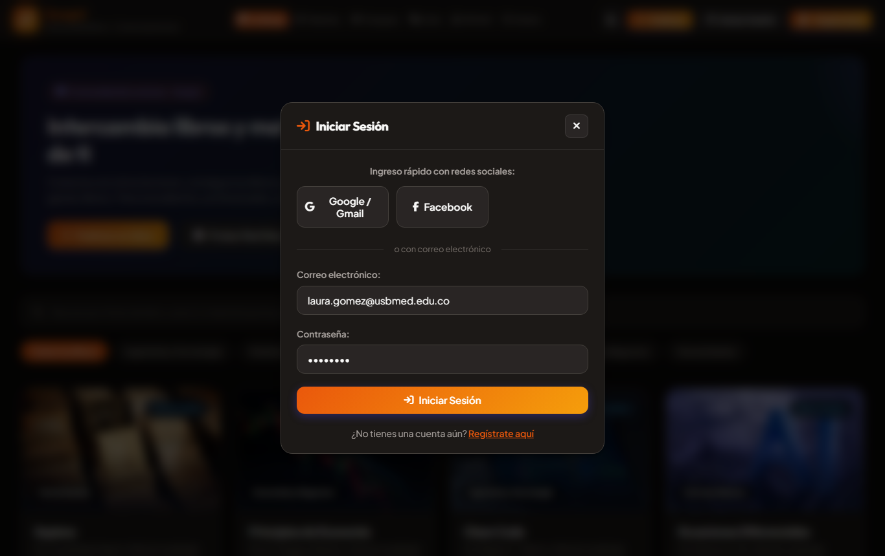
Figura 3. Inicio de sesión.
Tu sesión se mantiene al recargar la página.
Para salir, pulsa el ícono de cerrar sesión junto a tu nombre.
Tras 5 intentos fallidos seguidos la cuenta se bloquea temporalmente 15 minutos por seguridad.
5. Tu perfil y la verificación de estudiante
En Mi Perfil encuentras tus datos, tus estadísticas, tus publicaciones y las reseñas que te dejaron.
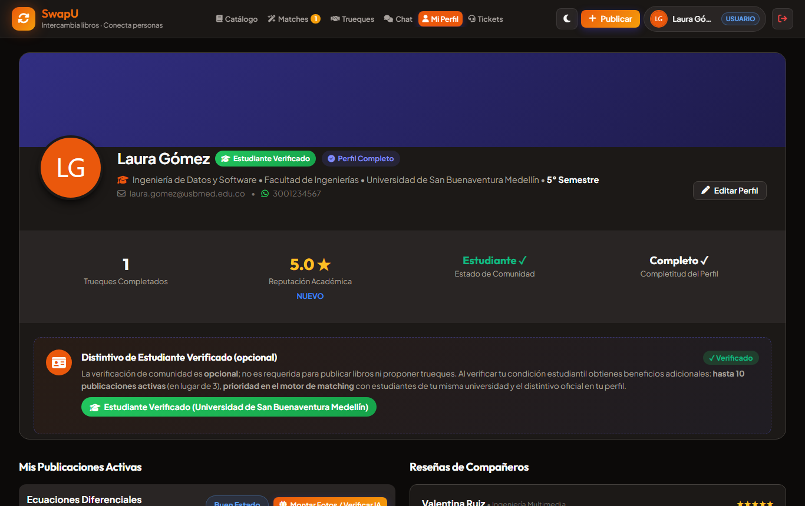
Figura 4. Perfil del estudiante con insignia de verificación y reputación.
Indicador
Significado
Trueques completados
Intercambios que finalizaste.
Reputación académica
Promedio de tus calificaciones y nivel: Nuevo, Confiable o Destacado.
Estado de comunidad
Si eres estudiante verificado.
Completitud del perfil
Si tus datos académicos están completos.
Editar tus datos
Pulsa Editar Perfil para actualizar nombre, teléfono, facultad, carrera y semestre.
Verificación de estudiante (opcional)
Si no usaste un correo institucional, puedes subir una foto de tu carné. Un moderador la revisa y la aprueba o rechaza indicando el motivo.
Los estudiantes verificados pueden tener hasta 10 publicaciones activas (en lugar de 3) y obtienen prioridad en las coincidencias.
6. Publicar un libro
Pulsa + Publicar.
Completa la información del libro:
Título y libro que buscas a cambio (obligatorios).
Autor, categoría, estado físico, edición y descripción.
ISBN de 10 o 13 dígitos, si lo tiene (se valida automáticamente).
Pulsa Publicar.
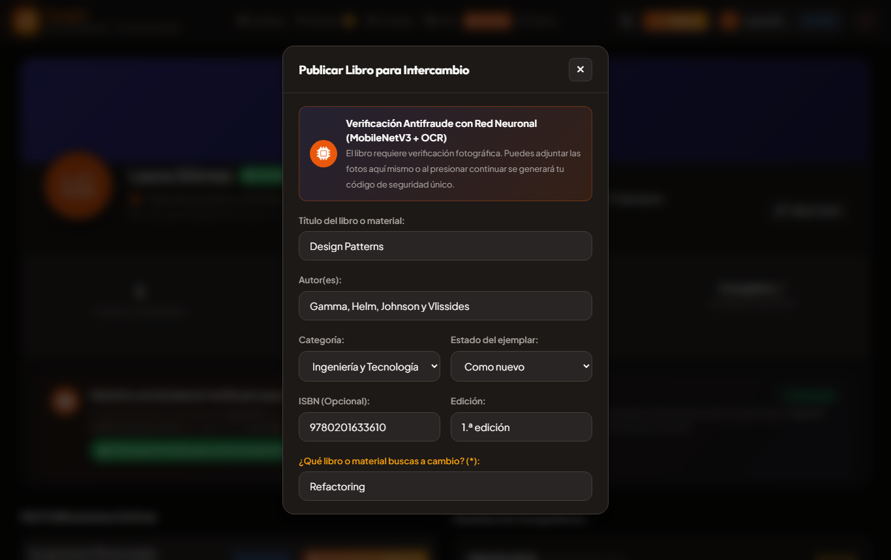
Figura 5. Formulario para publicar un libro.
Tu libro no aparece en el catálogo de inmediato: primero debe pasar la verificación con fotografías (siguiente sección).
7. Verificar tu libro con fotografías
Al publicar, SWAPU te muestra un código único. Sirve para demostrar que el libro está realmente en tus manos.
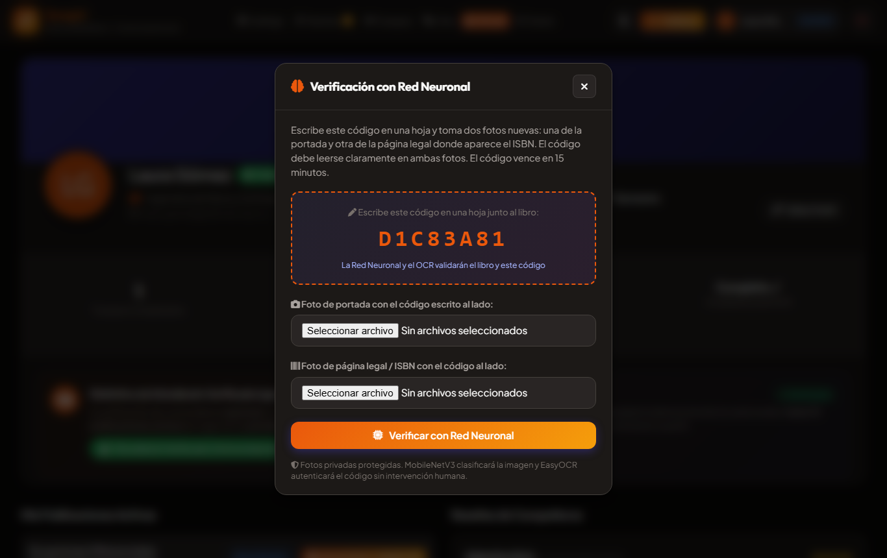
Figura 6. Código de verificación y carga de fotografías.
Escribe el código en una hoja de papel.
Toma una foto de la portada con la hoja visible al lado.
Toma una foto de la página legal donde aparece el ISBN, también con la hoja.
Sube las dos fotos (JPG o PNG) y pulsa Verificar.
¿Qué pasa después?
Si el sistema de inteligencia artificial está disponible, analiza las fotos.
Si la IA no está disponible o no puede decidir, la publicación pasa a revisión humana por un moderador.
Cuando la verificación se aprueba, tu libro aparece en el catálogo. Si se rechaza, verás el motivo.
El código vence en 15 minutos. Las fotos son privadas: solo las ven los moderadores.
8. Buscar libros en el catálogo
Con tu sesión iniciada, el catálogo te permite ver los detalles de cada libro y proponer un intercambio a su dueño.
Figura 7. Catálogo con sesión iniciada.
Busca por título, autor o libro buscado.
Filtra por categoría.
Abre una tarjeta para ver autor, edición, estado, descripción y el dueño.
9. Coincidencias (matches)
SWAPU compara tus libros con los del resto de estudiantes y te muestra quién tiene lo que buscas y busca lo que tienes.
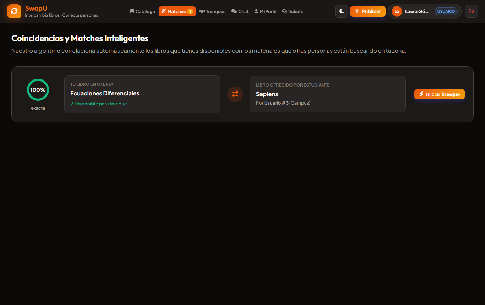
Figura 8. Coincidencia exacta entre dos estudiantes.
Exacta: los títulos coinciden. Similar: títulos parecidos.
El porcentaje indica qué tan buena es la coincidencia.
Pulsa Iniciar Trueque para enviar la propuesta.
El número junto a Matches en el menú indica cuántas coincidencias tienes.
10. Gestionar tus trueques
En Trueques ves todas tus propuestas y su estado. Puedes filtrarlas con las pestañas superiores.
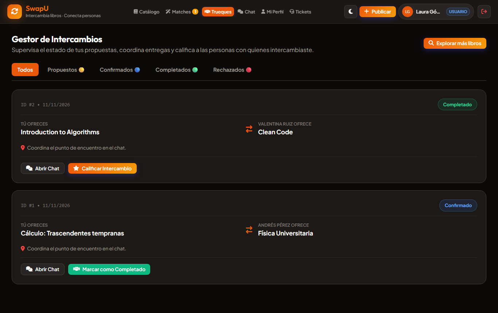
Figura 9. Gestor de intercambios.
Estado
Qué significa
Qué puedes hacer
Propuesto
Esperando respuesta.
El receptor puede Confirmar o Rechazar.
Confirmado
Ambos aceptaron.
Coordinar por chat y Marcar como completado.
Completado
Intercambio realizado.
Calificar a la otra persona.
Rechazado
Propuesta descartada.
Nada; el chat se cierra.
Un trueque solo puede completarse si fue confirmado, y uno rechazado no puede completarse.
11. Chat del intercambio
Cada trueque tiene su propio chat para acordar lugar y hora de entrega. Los mensajes llegan en tiempo real.
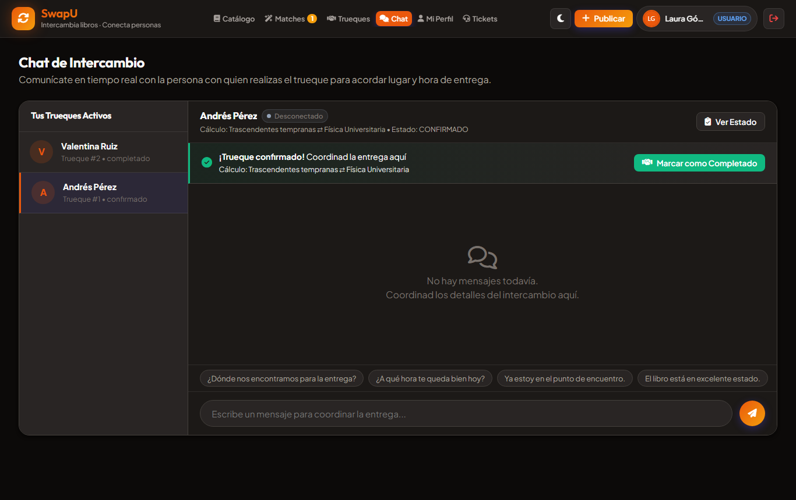
Figura 10. Chat entre dos estudiantes con trueque confirmado.
Ábrelo desde Chat o con Abrir Chat en la tarjeta del trueque.
Usa las respuestas rápidas para escribir más rápido.
El chat funciona mientras el trueque está propuesto o confirmado; se cierra al completarlo o rechazarlo.
Solo los dos participantes pueden leer la conversación. El lenguaje ofensivo se bloquea.
12. Calificar un intercambio y reputación
Cuando el trueque está completado, pulsa Calificar Intercambio.
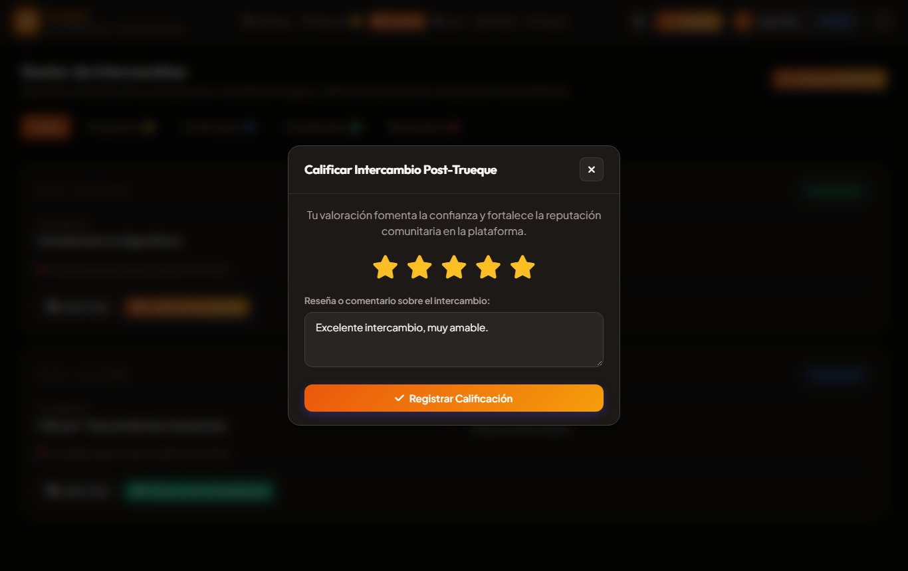
Figura 11. Calificación de 1 a 5 estrellas con reseña.
Elige de 1 a 5 estrellas.
Escribe una reseña (opcional).
Pulsa Registrar Calificación.
Solo puedes calificar una vez por trueque.
Tu reputación se calcula con un promedio ponderado (bayesiano), para que pocas calificaciones no la distorsionen.
Niveles: Nuevo, Confiable (3 o más reseñas) y Destacado (10 o más reseñas con promedio alto).
Puedes reportar una reseña inapropiada desde tu perfil.
13. Tickets de soporte
Los moderadores pueden abrir un ticket cuando necesitan algo de ti, por ejemplo una foto más clara de tu libro.
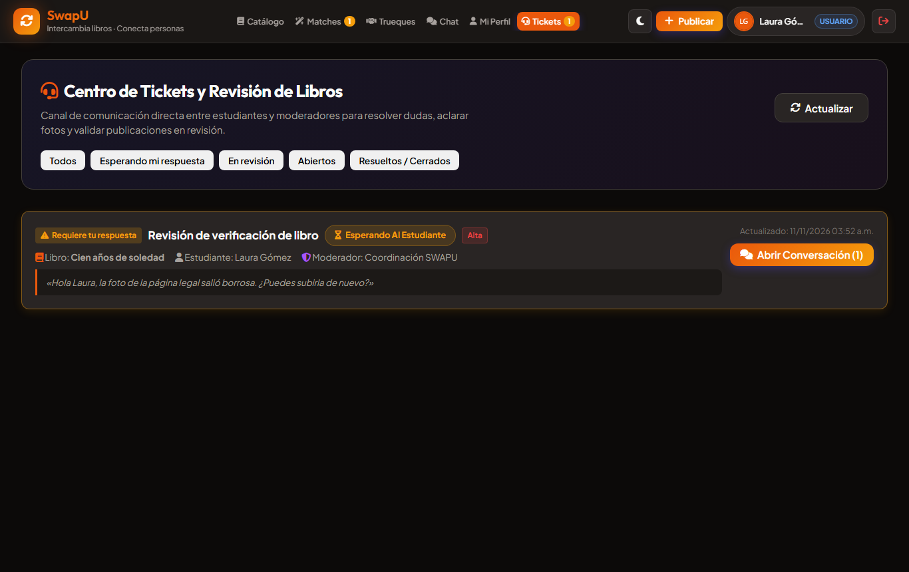
Figura 12. Ticket de revisión que requiere respuesta del estudiante.
El número junto a Tickets indica los que esperan tu respuesta.
Pulsa Abrir Conversación para leer y responder.
Filtra por estado: esperando tu respuesta, en revisión, abiertos o resueltos.
14. Panel de administración y moderación
Solo para cuentas con rol de administrador o moderador. Aparece como Panel Admin en el menú.
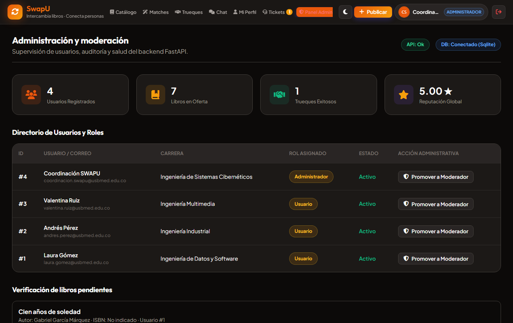
Figura 13. Indicadores reales, directorio de usuarios y verificaciones pendientes.
Función
Quién
Revisar verificaciones de libros: ver las fotos y aprobar o rechazar con una nota
Moderador, Administrador
Revisar carnés estudiantiles
Moderador, Administrador
Abrir y gestionar tickets
Moderador, Administrador
Reportes, advertencias, sanciones y apelaciones
Moderador, Administrador
Promover usuarios a moderador
Administrador
Consultar la auditoría de acciones
Administrador
Auditoría
Cada acción importante queda registrada: quién la hizo, qué hizo, cuándo, desde dónde y con qué resultado.
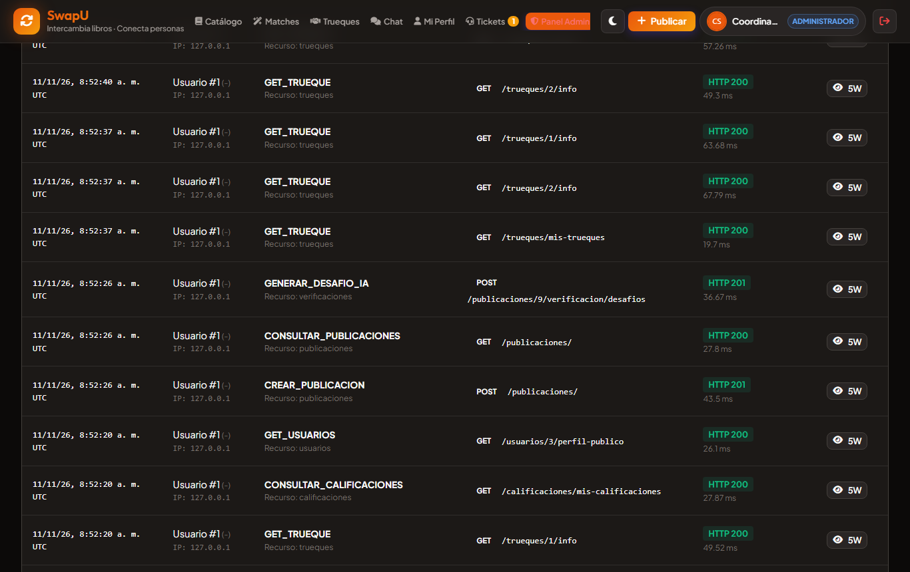
Figura 14. Registro de auditoría.
15. Preguntas frecuentes y solución de problemas
Situación
Qué hacer
No me llegó el código de confirmación
Revisa la carpeta de spam. Inicia sesión, deja vacía la ventana del código y acepta reenviarlo.
“Debes confirmar tu correo institucional”
Escribe el código de 6 dígitos que llegó a tu correo.
“Has superado el límite de intentos”
Espera unos minutos antes de volver a intentar.
Mi libro no aparece en el catálogo
Completa la verificación con fotos y espera la aprobación. Revisa tus Tickets.
No puedo publicar más libros
Alcanzaste el límite de publicaciones activas. Verifícate como estudiante para ampliarlo a 10.
No puedo enviar mensajes en el chat
El trueque ya fue completado o rechazado.
No puedo completar el trueque
El receptor debe confirmarlo primero.
“No se pudo cargar el catálogo”
El servidor no está disponible. Intenta de nuevo más tarde.
Olvidé mi contraseña
Contacta a la coordinación de SWAPU por un ticket o al administrador.
Recomendaciones de seguridad
Haz los intercambios en lugares públicos del campus, como la biblioteca.
No compartas tu contraseña ni tu código de confirmación.
Reporta cualquier comportamiento inapropiado desde la plataforma.